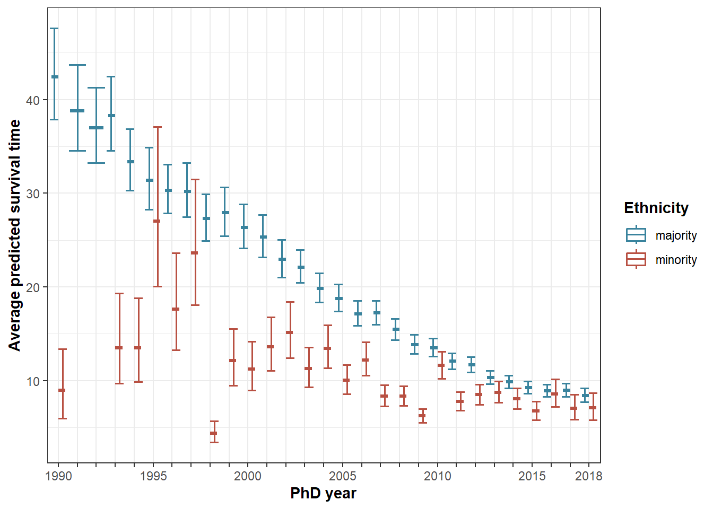

Figures
Last compiled on april, 2023
This lab journal replicates the analyses for ‘starting to publish’.
Custom functions
fpackage.check: Check if packages are installed (and install if not) in R (source).
fpackage.check <- function(packages) {
lapply(packages, FUN = function(x) {
if (!require(x, character.only = TRUE)) {
install.packages(x, dependencies = TRUE)
library(x, character.only = TRUE)
}
})
}
fsave <- function(x, file, location="./data/processed/") {
datename <- substr(gsub("[:-]", "", Sys.time()), 1,8)
totalname <- paste(location, datename, file, sep="")
save(x, file = totalname)
}Packages
tidyverse: for data manipulationggplot2: for creating figures 2-4ggpubr: for combining two figures in one (plot 2)splinessplines2: for modelling non-linear cohort relations
packages = c("tidyverse", "ggplot2", "ggpubr", "splines", "splines2")
fpackage.check(packages)Input
We use two processed datasets:
- df_starting.rda:
dataset of PhDs with all relevant variables: gender + ethnicity +
university + PhD year
- For construction of this dataset see [(datapreparations.html)]
- name of dataset:
df_starting
- For construction of this dataset see [(datapreparations.html)]
- df_stopping.rda:
person-period file containing publications and all relevant variables
for the survival models, time window for inactivity is 3 years
- For construction of this dataset see [(datapreparation.html)]
- name of dataset:
df_ppf3
- For construction of this dataset see [(datapreparation.html)]
Furthermore, we load in the results from our analyses to create figures 2-7.
load(file = "./data/processed/df_starting.rda")
load(file = "./data/processed/df_stopping.rda")Defining color parameters up front
tot <- "#414141"
menc <- "#D1C166"
womenc <- "#48a363"
majc <- "#39839D"
minc <- "#B85042"Figure 1
Number of PhDs entering the sample per cohort, split out by gender and ethnicity
df_starting %>%
group_by(phd_year) %>%
count() -> totalentry
df_starting %>%
group_by(phd_year) %>%
count(gender) -> genderentry
df_starting %>%
group_by(phd_year) %>%
count(ethnicity2) -> ethnientry
genderentry <- genderentry[genderentry$gender!="missing",]
ethnientry <- ethnientry[ethnientry$ethnicity2!="other",]
genderentry$type <- as.character(genderentry$gender)
genderentry <- genderentry[,-2]
ethnientry$type <- as.character(ethnientry$ethnicity2)
ethnientry <- ethnientry[,-2]
totalentry$type <- rep("total", times=nrow(totalentry))
entry_df <- rbind.data.frame(totalentry, genderentry, ethnientry)
entry_df$type <- ifelse(entry_df$type=="minority", "ethnic minority", entry_df$type)
entry_df$type <- ifelse(entry_df$type=="majority", "ethnic majority", entry_df$type)
ggplot(entry_df, aes(y=n, x=phd_year, color=factor(type, levels=c("total", "men", "women", "ethnic majority", "ethnic minority")))) +
geom_line(lwd = 0.8)+
theme_bw() +
scale_x_continuous(breaks=c(1990,1995,2000,2005,2010,2015,2019))+
labs(x = "Year of doctorate receipt", y = "Frequency") +
theme(axis.title=element_text(face="bold")) +
scale_color_manual(values=c(tot, menc, womenc, majc, minc), name="Group")ggsave("./output/starting/plot1.jpg", height=4, width=8, dpi=1200)Figure 2
Loading in results for ‘starting to publish’
load(file = "results/starting/20230405M1.rda")
M1 <- x
rm(x)
load(file = "results/starting/20230405M2.rda")
M2 <- x
rm(x)
load(file = "results/starting/20230405M3.rda")
M3 <- x
rm(x)
load(file = "results/starting/20230405M4.rda")
M4 <- x
rm(x)Figure 2a: gender only
# Calculating predicted probabilities
M1 %>% predict(df_starting, type="link", se.fit = TRUE) -> plot2a
# calculate upper and lower bounds for the confidence intervals
plot2a$upper <- plot2a$fit + (1.96 * plot2a$se.fit)
plot2a$lower <- plot2a$fit - (1.96 * plot2a$se.fit)
plot2a <- as.data.frame(plot2a)
# excluding gender = missing from the plot
plot2a$gender <- df_starting$gender
plot2a <- plot2a[plot2a$gender!="missing",]
plot2a %>%
group_by(gender) %>%
summarise(fit = plogis(mean(fit)),
upper = plogis(mean(upper)),
lower = plogis(mean(lower))) -> plot2a
ggplot(plot2a,aes(gender,fit, color=(gender)))+
geom_boxplot(width = .1) +
geom_errorbar(aes(ymin = lower, ymax = upper), lwd = 0.8, width = .05) + ylim(0, 0.3) +
labs(x = "Gender", y = "Probability of starting to publish") +
theme_bw() +
scale_color_manual(values=c(menc, womenc), name="Gender") +
geom_text(x=0.5, y=0.28, label="A", size=10, color="black")+
theme(axis.title=element_text(face="bold"),
legend.position = "none") -> plot2a
# Exact gender differences in probability of starting to publish
plot2a$data## # A tibble: 2 x 4
## gender fit upper lower
## <fct> <dbl> <dbl> <dbl>
## 1 men 0.212 0.216 0.208
## 2 women 0.220 0.225 0.215Figure 2b: ethnicity only
# Calculating predicted probabilities
M2 %>% predict(df_starting, type = "link", se.fit = TRUE) -> plot2b
# Calculating confidence intervals
plot2b$upper <- plot2b$fit + (1.96 * plot2b$se.fit)
plot2b$lower <- plot2b$fit - (1.96 * plot2b$se.fit)
plot2b <- as.data.frame(plot2b)
plot2b$ethnicity2 <- df_starting$ethnicity2
# Removing ethnicity 'other' from plot
plot2b <- plot2b[plot2b$ethnicity2!="other",]
plot2b %>%
group_by(ethnicity2) %>%
summarise(fit = plogis(mean(fit)),
upper = plogis(mean(upper)),
lower = plogis(mean(lower))) -> plot2b
ggplot(plot2b,aes(as.factor(ethnicity2),fit, color=(ethnicity2)))+
geom_boxplot(width = .1) +
geom_errorbar(aes(ymin = lower, ymax = upper), lwd = 0.8, width = .05) + ylim(0, 0.3) +
labs(x = "Ethnicity", y = "Probability of starting to publish") +
theme_bw() +
scale_color_manual(values=c(majc, minc), name="Ethnicity") +
geom_text(x=0.5, y=0.28, label="B", size=10, color="black") +
theme(axis.title=element_text(face="bold"),
legend.position = "none") -> plot2b
# Exact ethnic differences in probability of starting to publish
plot2b$data## # A tibble: 2 x 4
## ethnicity2 fit upper lower
## <fct> <dbl> <dbl> <dbl>
## 1 majority 0.197 0.201 0.194
## 2 minority 0.144 0.160 0.129Figure 2: combining A and B
plot2 <- ggarrange(plot2a, plot2b, ncol = 2, nrow=1)
plot2
Figure 3
Predicted probability to start by gender and cohort
plot4 <- plot3 <- M4 %>% predict(df_starting, type="link", se.fit=TRUE)
plot3 <- as.data.frame(plot3)
plot3$gender <- df_starting$gender
plot3$phd_cohort <- df_starting$phd_cohort
plot3 <- plot3[plot3$gender!="missing",]
plot3$upper <- plot3$fit + (1.96 * plot3$se.fit)
plot3$lower <- plot3$fit - (1.96 * plot3$se.fit)
plot3 %>%
group_by(gender, phd_cohort) %>%
summarise(fit = plogis(mean(fit)),
upper = plogis(mean(upper)),
lower = plogis(mean(lower))) -> plot3
# transform back to years for easier interpretability
plot3$phdyear <- plot3$phd_cohort+1990
ggplot(plot3, aes(x=as.factor(phdyear), y=fit, color=gender)) +
geom_boxplot(lwd=.6, position="dodge") +
geom_errorbar(aes(ymin=lower, ymax=upper), lwd=.7, position="dodge") +
ylim(0, 0.3) +
labs(x = "PhD year", y = "Probability of starting to publish") +
theme_bw() +
scale_x_discrete(labels = c("1990", c(rep(" ", 4)), "1995", c(rep(" ", 4)), "2000", c(rep(" ", 4)), "2005", c(rep(" ", 4)), "2010", c(rep(" ", 4)), "2015", c(rep("", 3)), "2019")) +
scale_color_manual(values=c(men=menc,women=womenc), name="Gender") +
theme(axis.title=element_text(face="bold"), legend.title=element_text(face="bold"))Figure 4
Predicted probability to start by ethnicity and cohort
plot4 <- as.data.frame(plot4)
plot4$ethnicity2 <- df_starting$ethnicity2
plot4$phd_cohort <- df_starting$phd_cohort
plot4 <- plot4[plot4$ethnicity2!="other",]
plot4$upper <- plot4$fit + (1.96 * plot4$se.fit)
plot4$lower <- plot4$fit - (1.96 * plot4$se.fit)
plot4 %>%
group_by(ethnicity2, phd_cohort) %>%
summarise(fit = plogis(mean(fit)),
upper = plogis(mean(upper)),
lower = plogis(mean(lower))) -> plot4
# transform back to years for easier interpretability
plot4$phdyear <- plot4$phd_cohort+1990
ggplot(plot4, aes(x=as.factor(phdyear), y=fit, color=ethnicity2)) +
geom_boxplot(lwd=.6, position="dodge") +
geom_errorbar(aes(ymin=lower, ymax=upper), lwd=.7, position="dodge") +
ylim(0, 0.5) +
labs(x = "PhD year", y = "Probability of starting to publish") +
theme_bw() +
scale_x_discrete(labels = c("1990", c(rep(" ", 4)), "1995", c(rep(" ", 4)), "2000", c(rep(" ", 4)), "2005", c(rep(" ", 4)), "2010", c(rep(" ", 4)), "2015", c(rep("", 3)), "2019")) +
scale_color_manual(values=c(majority=majc, minority=minc), name="Ethnicity") +
theme(axis.title=element_text(face="bold"), legend.title=element_text(face="bold"))
Figure 5
Loading in results for ‘stopping to publish’
load(file = "results/stopping/20230405M1.rda")
M1 <- x
rm(x)
load(file = "results/stopping/20230405M2.rda")
M2 <- x
rm(x)
load(file = "results/stopping/20230405M3.rda")
M3 <- x
rm(x)
load(file = "results/stopping/20230405M4.rda")
M4 <- x
rm(x)Survival times by gender and ethnicity. Based on M1: gender only.
# Calculating predicted probabilities
M1 %>% predict(type="response", conf.int=TRUE, conf.level=.95, newdata=df_ppf3) -> plot5a
class(plot5a) ## [1] "tbl_df" "tbl" "data.frame"plot5a <- as.data.frame(plot5a)
# excluding gender = missing from the plot
plot5a$gender <- df_ppf3$gender
plot5a <- plot5a[plot5a$gender!="missing",]
plot5a %>%
group_by(gender) %>%
summarise(fit = mean(.pred_time),
upper = mean(.pred_upper),
lower = mean(.pred_lower)) -> plot5a
ggplot(plot5a,aes(gender, fit, color=(gender)))+
geom_boxplot(width = .1) +
geom_errorbar(aes(ymin = lower, ymax = upper), lwd = 0.8, width = .05) +
ylim(0, 20) +
labs(x = "Gender", y = "Average predicted survival time") +
theme_bw() +
scale_color_manual(values=c(menc, womenc), name="Gender") +
geom_text(x=0.7, y=19, label="A", size=10, color="black") +
theme(axis.title=element_text(face="bold"),
legend.position = "none") -> plot5a
plot5aBased on M2: ethnicity only.
# Calculating predicted probabilities
M2 %>% predict(type="response", conf.int=TRUE, conf.level=.95, newdata=df_ppf3) -> plot5b
plot5b <- as.data.frame(plot5b)
# excluding gender = missing from the plot
plot5b$ethnicity <- df_ppf3$ethnicity2
plot5b <- plot5b[plot5b$ethnicity!="other",]
plot5b %>%
group_by(ethnicity) %>%
summarise(fit = mean(.pred_time),
upper = mean(.pred_upper),
lower = mean(.pred_lower)) -> plot5b
ggplot(plot5b,aes(ethnicity, fit, color=(ethnicity)))+
geom_boxplot(width = .1) +
geom_errorbar(aes(ymin = lower, ymax = upper), lwd = 0.8, width = .05) +
ylim(0, 20) +
labs(x = "Ethnicity", y = "Average predicted survival time") +
theme_bw() +
scale_color_manual(values=c(majc, minc), name="Ethnicity") +
geom_text(x=0.7, y=19, label="B", size=10, color="black") +
theme(axis.title=element_text(face="bold"),
legend.position = "none") -> plot5bCombined: plot 4
plot5 <- ggarrange(plot5a, plot5b, ncol = 2, nrow=1, widths=c(1,1))
plot5plot5a$data # predicted survival time by gender## # A tibble: 2 x 4
## gender fit upper lower
## <fct> <dbl> <dbl> <dbl>
## 1 men 15.8 16.4 15.2
## 2 women 13.0 13.5 12.5plot5b$data # predicted survival time by ethnicity## # A tibble: 2 x 4
## ethnicity fit upper lower
## <fct> <dbl> <dbl> <dbl>
## 1 majority 14.7 15.2 14.3
## 2 minority 9.35 10.7 8.20Figure 6: Gender * cohort
Here, I check the predicted values based on model 3. I found that the predicted values based on the full model were extreme in some cases. By adding the variables in model 3 one by one, I check which variables lead to large deviations from normal predicted values. Inclusion of university, field, cohort and veni leads to a small percentage of unrealistic predicted values, while previous publications seems to add quite a few.
M4 %>% predict(type="response", conf.int=TRUE, conf.level=.95, newdata=df_ppf3) -> p6
plot7 <- plot6 <- as.data.frame(p6) # same data for plot 5 and 6
# excluding gender = missing from the plot
plot6$gender <- df_ppf3$gender
plot6$cohort <- df_ppf3$phd_cohort
plot6 <- plot6[plot6$gender!="missing",]
plot6 %>%
group_by(gender, cohort) %>%
summarise(fit = mean(.pred_time),
upper = mean(.pred_upper),
lower = mean(.pred_lower)) -> plot6
# transform back to years for easier interpretability
plot6$phdyear <- plot6$cohort + 1990
ggplot(plot6, aes(x=as.factor(phdyear), y=fit, color=gender)) +
geom_boxplot(lwd=.6, position="dodge") +
geom_errorbar(aes(ymin=lower, ymax=upper), lwd=.7, position="dodge") +
labs(x = "PhD year", y = "Average predicted survival time") +
theme_bw() +
scale_x_discrete(labels = c("1990", c(rep(" ", 4)), "1995", c(rep(" ", 4)), "2000", c(rep(" ", 4)), "2005", c(rep(" ", 4)), "2010", c(rep(" ", 4)), "2015", c(rep("", 2)), "2018")) +
scale_color_manual(values=c(men=menc,women=womenc), name="Gender") +
theme(axis.title=element_text(face="bold"), legend.title=element_text(face="bold"))Figure 7: Ethnicity * cohort
# excluding ethnicity = other from the plot
plot7$ethnicity <- df_ppf3$ethnicity2
plot7$cohort <- df_ppf3$phd_cohort
plot7 <- plot7[plot7$ethnicity!="other",]
plot7 %>%
group_by(ethnicity, cohort) %>%
summarise(fit = mean(.pred_time),
upper = mean(.pred_upper),
lower = mean(.pred_lower)) -> plot7
# transform back to years for better interpretability
plot7$phdyear <- plot7$cohort + 1990
ggplot(plot7, aes(x=as.factor(phdyear), y=fit, color=ethnicity)) +
geom_boxplot(lwd=.6, position="dodge") +
geom_errorbar(aes(ymin=lower, ymax=upper), lwd=.7, position="dodge") +
labs(x = "PhD year", y = "Average predicted survival time") +
theme_bw() +
scale_color_manual(values=c(majority=majc, minority=minc), name="Ethnicity") +
scale_x_discrete(labels = c("1990", c(rep(" ", 4)), "1995", c(rep(" ", 4)), "2000", c(rep(" ", 4)), "2005", c(rep(" ", 4)), "2010", c(rep(" ", 4)), "2015", c(rep("", 2)), "2018")) +
theme(axis.title=element_text(face="bold"), legend.title=element_text(face="bold"))
Copyright © 2023